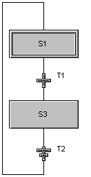

Stored Action Qualifier types
Set (Stored) Action Qualifier (S)
A set (stored) action goes active when the step becomes active and stays active until reset. While the action is active, the action text is evaluated on every scan through the step actions. Refer to the reset action qualifier description to see how a reset can be done for each action type.
- Assignment Action
The assignment statement is evaluated (and the assignment made) on each scan through the SFC actions. The action remains active until a reset action is evaluated for this set action. Refer to the reset action qualifier description to see how a reset can be done for an assignment action.
- Boolean Action
The Boolean destination referenced is written to TRUE for each scan of the step actions while the set action remains active. The action remains active until a reset action is evaluated for that same Boolean destination. Refer to the reset action qualifier description to see how a reset can be done for a Boolean action.
- Non-Boolean
The function block is evaluated on each scan through the step actions. The action remains active until a reset action is evaluated for that same function block. Refer to the reset action qualifier description to see how a reset can be done for a non-Boolean action.
When the SFC stops, all actions stop.
Because when the SFC stops all actions stop, you cannot have a stored action reset a sequence when the sequence stops.
Stored and Time Delayed Action Qualifier (SD)
A stored and time delayed (SD) action is similar to a stored action except that you can specify a delay time before the action goes active. If the step goes inactive before the time delay is satisfied, the action still goes active as a result of this action once the time delay is satisfied.
When you create an assignment action with a Stored and Time Delayed (SD) qualifier and you have the SFC connected so that it loops back and continues to restart, the action will delay every time through the sequence, if it was reset.
For example, S1 in the following figure contains a stored delay action, A1. Suppose A1 is a assignment action with the text
'/PARAM1' := '/PARAM1' + 1;
and a delay of 30 seconds. When S1 becomes active, A1 becomes active. A1 waits 30 seconds and then increments PARAM1. S3 contains an action that resets A1. Because it has been reset, A1 will delay every time S1 becomes active.

If A1 was not reset, it would stay active and keep the same output. (The delay would not recur.) So, if you did not want the delay to occur every time through the sequence, you would not reset the action every time. The same is true for a Time Delayed and Stored (DS) qualifier.
The only difference between the Stored and Time Delayed (SD) and the Time Delayed and Stored (DS) qualifier occurs when the step goes inactive before the delay is finished. If this happens before the delay is complete in an SD action, the action is stored, but in a DS action if the step goes inactive before the delay is complete, the action is not stored because the delay did not complete.
When the SFC stops, all actions stop.
Also note that when the SFC stops, all actions stop. Therefore, you cannot have a stored action reset the sequence when the sequence stops.
- Assignment Action
The assignment statement is evaluated (and the assignment made) on each scan through the step actions, once the time delay specified as part of the action configuration is met. The action actually goes active (and can be reset) when the step initially goes active. The action then stays active until a reset action is evaluated for this assignment statement. Refer to the reset action qualifier (R) description to see how a reset can be done for an assignment action.
- Boolean Action
The Boolean destination referenced is written to TRUE for each scan through the step actions, once the time delay specified as part of the Action configuration is met. The action actually goes active (and can be reset) when the step initially goes active. The action then stays active until a reset action is evaluated for that same Boolean destination. Refer to the reset action qualifier (R) description to see how a reset can be done for a Boolean action.
- Non-Boolean Action
The function block usage referenced is evaluated for each scan through the step actions once the time delay specified as part of the action configuration is met. The action actually goes active (and can be reset) when the step initially goes active. The action then stays active until a reset action is evaluated for that function block usage. Refer to the reset action qualifier description to see how a reset can be done for a non-Boolean action.
Time Delayed and Stored Action Qualifier (DS)
A time delayed and stored action is similar to a stored action except that you can specify a delay time before that action goes active. If the step goes inactive before the time delay is satisfied, the action does not go active as a result of this action, and a reset is not required.
- Assignment Action
The assignment statement is evaluated (and the assignment made) on each scan through the step actions once the time delay specified as part of the action configuration is met. The action actually goes active when the time delay is reached and stays active until a reset action is evaluated for this assignment statement. Refer to the reset action qualifier description to see how a reset can be done for an assignment action.
- Boolean Action
The Boolean destination referenced is written to TRUE for each scan through the step actions once the time delay specified as part of the action configuration is met. The action actually goes active when the time delay is reached and stays active until a reset action is evaluated for that same Boolean destination. Refer to the reset action qualifier description to see how a reset can be done for a Boolean action.
- Non-Boolean Action
The function block referenced is evaluated for each scan through the step actions once the time delay specified as part of the action configuration is met. The action actually goes active when the time delay is reached and stays active until a reset action is evaluated for that function block. Refer to the reset action qualifier description to see how a reset can be done for a non-Boolean action.
Stored and Time Limited Action Qualifier (SL)
A stored and time limited action is similar to a stored action except that you are allowed to specify a maximum amount of time for this action to be active. The action goes active when the step goes active and then remains active until the configured time has elapsed or a reset is evaluated. If the configured time limit is reached, a reset is not required.
- Assignment Action
The assignment statement is evaluated (and the assignment made) on each scan through the step actions once the step goes active. The action stays active until the time limit specified as part of the action configuration is met or a reset action is evaluated for this assignment statement. Refer to the reset action qualifier description to see how a reset can be done for an assignment action.
- Boolean Action
The Boolean destination referenced is written to TRUE for each scan through the step actions starting when the step goes active. The action stays active until the time limit specified as part of the action configuration is met or a reset action is evaluated for that same Boolean destination. Refer to the reset action qualifier description to see how a reset can be done for a Boolean action.
- Non-Boolean Action
The function block referenced is evaluated for each scan through the step actions starting when the step goes active. The action stays active until the time limit specified as part of the action configuration is met or a reset action is evaluated for that function block. Refer to the reset action qualifier description to see how a reset can be done for a non-Boolean action.